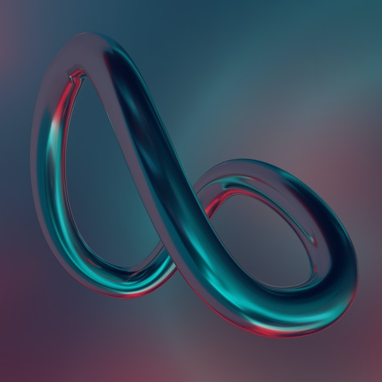

Con esta asignatura se espera contribuir en la formación profesional de los estudiantes para desarrollar su perfil en razón de las competencias de diseño para la web.
Historia de internet. 2. Terminología Básica. 3. URL, Dominios y subdominios. 4. Editores -v Navegadores. 5. lntroducción al lenguaje HTML. 6. Estructura de una Página Web. 6.1 Metadatos.
6.2 Atributos Para etiqueta body 7. Código de Colores HTML. 8. Caracteres esPeciales. 8.1 Espacios en Blanco. 8.2 Tildes. 8.3 Símbolos.
Básicamente es la manera en la que uno se presenta y diferencia en el mercado laboral. Esto permite crear vínculos con los clientes ya que una marca personal debe transmitir lo que uno es profesionalmente hablando; : y si esto es así uno se puede llegar a ganarse la confianza de las personas.: Con la marca personal se busca transmitir a las personas nuestros valores, fortalezas y capacidades.
ContenidoLicdo. Eduardo Fajardo

Esta asignatura introduce a los estudiantes al diseño de señalética. una de las ramas más imporlantes dentro del diseño gráfico ya que es utilizada en cualquier ámbito con el fin de brindar indicaciones claras por medio de iconos y gráficos. El diseño de señalética cumple con la tarea de guiar y contextualizar a una persona dentro de un determinado espacio o territorio. El diseño de señalética sirve para advertir o indicar los diferentes usos de un lugar tanto interiol como exterior. No es algo que se le ofrezca dentro de Ia imagen corporativa mucha importancia, pero el diseño de señalética nos va a guiar, nos va a describir como es el espíritu de la empresa y colno quiere que la percibamos.
Contenido
: La asignatura apofta al perfil del diseñador en el mercado iaboral habilidades de integración y aplicación de diseño de procluctos y empaque, el proceso a seguir para el desarollo de nuevos productos, y pone en práctica los conocimientos de materias relacionadas con el diseño digital mediante el desarrollo visual estético y funcionai del producto, generando en el diseñador las habilidades prácticas para el desarrollo de productos y la protección de 1a propiedad intelectual.: Durante el desarrollo de la asignatura, el estudiante aplica los conocimientos adquiridos en tecnologías digitales, así como en los diversos tipos de productos, conoce y aplica las nuevas tendencias del mercado, discieme entre los diferentes tipos de consumidores. sus necesidades y expectativas, desarrolla un producto que cubra con los requerimientos del cliente.

Contenido
Esta asignatura es teórica práctica cuya finalidad es que los estudiantes puedan adquirir conocimientos sobre los elementos básicos del modelado 3D en Cinema4D, experimentando las técnicas desde la forma más simple, el color, texturas, dinámicas, etc. Analizando las bases del Modelado y su aplicación en ejercicios que enriquezcan la calidad conceptuar y técnica de cada estudiante. El diseñador debe tener conocimientos sobre las herramientas básicas del programa, y su función desde los inicios de la asignatura, pues deberá general en un futuro, mezcla de sus conocimientos sobre el modelado y otras áreas para poder dar respuestas que coincidan con su condicion de creativo al finalizar el estudio de todos los contenidos el estudiante debe haber desarrollado habilidades y destrezas para Aplicar métodos de modelado e impresion 3D en la creación de nuevos productos para diferentes medios
Contenido